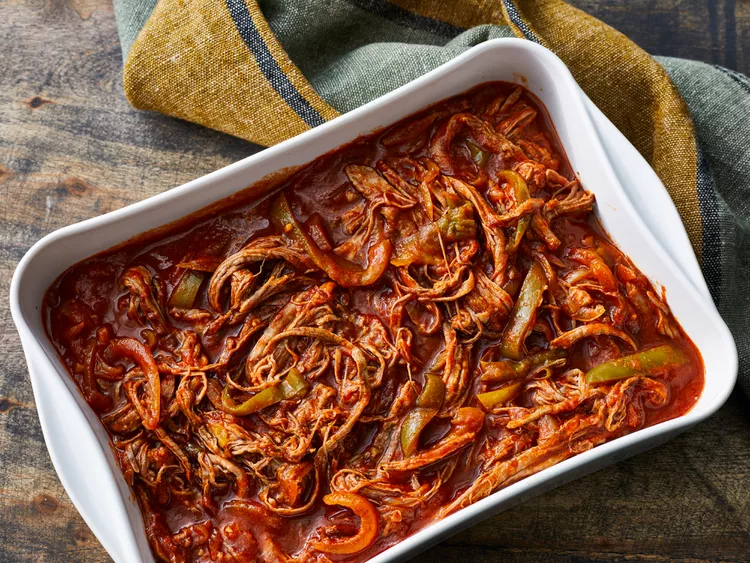

Cuban Ropa Vieja

Description
This ropa vieja is great served on tortillas or over rice. Add sour cream, cheese, and fresh cilantro on the
side.
Prep Time:
15 mins
Cook Time:
4 hrs
Total Time:
4 hrs 15 mins
Servings:
6
Ingredients
- 1 tablespoon vegetable oil
- 2 pounds beef flank steak
- 1 cup beef broth
- 1 (8 ounce) can tomato sauce
- 1 (6 ounce) can tomato paste
- 1 green bell pepper, seeded and sliced into strips
- 1 small onion, sliced
- 2 cloves garlic, chopped
- 1 teaspoon ground cumin
- 1 teaspoon chopped fresh cilantro
- 1 tablespoon olive oil
- 1 tablespoon white vinegar